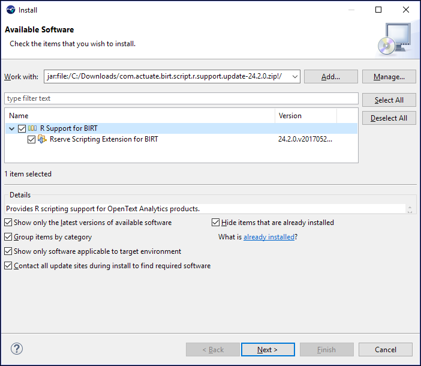

Installing R support for OpenText™ Magellan™ BI & Reporting
You must install the Rserve plug-in to enable R integration in OpenText™ Magellan™ Analytics Designer and OpenText Magellan BI & Reporting. Analytics Designer and BI & Reporting use a dedicated plug-in to connect to and query Rserve. The plug-in contains third-party libraries licensed under LGPL 2.1.
How to install the Rserve plug-in for Analytics Designer:
- Download the R support update as a zip file from here:
com.actuate.birt.script.r.support.update-24.2.0.zip
- Open Analytics Designer.
- Choose Help > Install New Software.
- In Available Software, choose Add. Then choose Archive.
- Browse to the ZIP file that you downloaded and select it. Choose Open. Choose Add to close the dialog.
- In Available Software, select R Support for BIRT. Choose Next.

- Review the items to be installed, and choose Next.
- Choose I accept the terms of the license agreement. Choose Finish.
- Choose Install anyway to accept the unsigned content.
- When the installation completes, choose Restart Now to restart Analytics Designer.
- To test that R support is enabled, open Window > Preferences, and select OpenText BIRT - Rserve Connection.
Enter the connection information for the Rserve instance, and choose Test Connection to verify that Analytics Designer is able to connect to R.
For more information, see Analytics Designer User Guide, available as product help and also on http://mysupport.opentext.com.
How to install the Rserve plug-in for BI & Reporting:
- Download the plugin com.actuate.birt.script.ext.rserve.
Save the jar file locally. The file name is com.actuate.birt.script.ext.rserve_24.2.0.v201705292336.jar.
- Copy the file to:
<AC_SERVER_HOME>\web\birtservice\WEB-INF\platform\plugins
- Restart BI & Reporting.
- After BI & Reporting is restarted, log on to System Console to configure R connectivity. For more information, see BI & Reporting Installation, Configuration,
and Administration Guide, available as product help and also on http://mysupport.opentext.com.